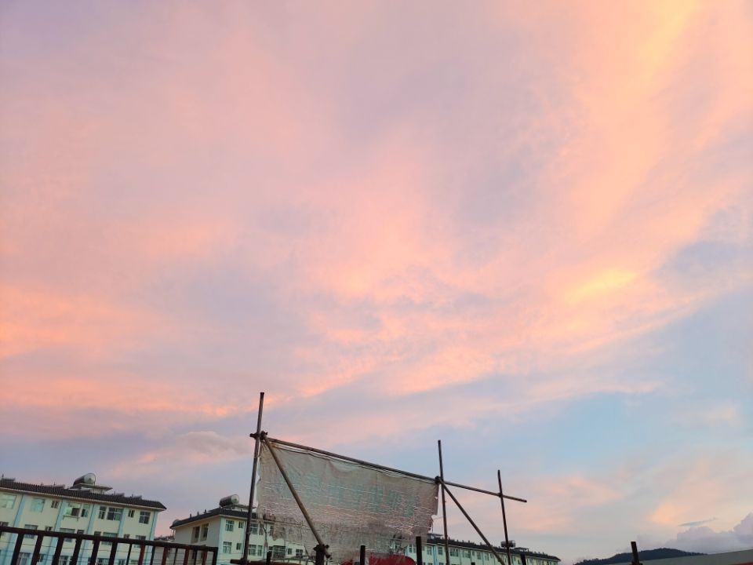

关于我
姓名: 胡浪涛
性别: 男
年龄: 16
专业: 信管
家乡介绍：云南
云南位于中国南部，是一个美丽多彩的地方，被誉为"世界上最美的地方之一"。云南拥有壮丽的自然风景、丰富的民族文化和独特的地理特点。
云南有着壮丽的山川景观，包括雪山、峡谷、湖泊和瀑布。其中著名的景点包括玉龙雪山、虎跳峡和大理洱海等。这些景点吸引了大量的游客前来观赏和探索。
云南是一个多民族的地区，有着丰富的民族文化。这里有25个民族，包括哈尼族、彝族、白族、傣族等。每个民族都有独特的传统服饰、音乐、舞蹈和节日活动，游客可以在云南体验到不同的文化风情。
云南的地理位置独特，位于中国的西南边陲，与缅甸、老挝和越南接壤。这使得云南成为中国与东南亚交流的重要通道，也带来了丰富的物产和文化交融。
